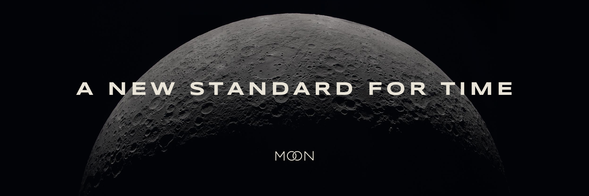

Logos, badges, colors, type and the facts about Moon. Everything is free to use for coverage of Moon and for products built on it, following the guidelines below.
Use this description in articles and listings.
Moon is a new, open standard for time. It counts the year in 13 moons, each one lunar cycle long on average, for exactly 369 lunes, and gives every moment one Moonmark, the same everywhere, with no time zones or daylight saving. The standard, its reference code and its API are free for anyone to use.
The primary logo. The two O's are linked: one passes over the other at the top and under it at the bottom. SVG and PNG versions are in the full kit.
The linked O's on their own, for avatars, favicons and tight spaces.
1024 px masters. The kit also includes 512, 64 and 32 px versions; the small sizes use a heavier stroke so they stay legible.
For sites and apps that show Moon time from the API. Link the badge to the Moon homepage. Full rules are on the API page.
Breathe: one solid circle opens into the two rings and closes again, 3.2 seconds, no pause. The animated SVG and a standalone HTML page are in the full kit.
About 90 percent dark, 10 percent cream. Regolith is the only accent.
Three free Google Fonts. Never substitute others in brand materials.
Headlines, labels and navigation. Uppercase only, wide tracking.
Body copy and reading. Sentence case, 400 and 500 weights.
Times, Moonmarks, code and numbers. Tabular figures.

Keep the brand consistent wherever it appears.
Keep clear space around the logo equal to the height of one O.
Wordmark at least 80 px wide on screen; mark at least 24 px.
Cream on dark or black on cream. Nothing else.
No gradients, shadows, glows, outlines or new colors.
The linked O's are one shape. Never unlink, rotate or space them.
Always use the supplied files. Never retype MOON in a font.
The Moon name, the linked-O mark and the Powered by Moon badge are trademarks. Using them in coverage, or to show that a product runs on Moon time, is welcome. Using them to imply partnership, certification or endorsement requires written approval.


SOCIAL
The X banner and avatar. The kit also includes the full-size "A new standard for time" image.